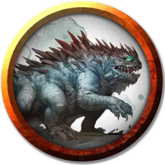

Велдискар
Veldyskar
Средний Монстр, без мировоззрения

Класс Доспеха 15 (природный доспех)
Хиты 52 (8к8 + 16)
Скорость 20 футов
| мод | спас | ||
|---|---|---|---|
| СИЛ | 16 | +3 | +3 |
| ЛОВ | 8 | −1 | −1 |
| ТЕЛ | 15 | +2 | +2 |
| мод | спас | ||
|---|---|---|---|
| ИНТ | 10 | +0 | +0 |
| МДР | 8 | −1 | −1 |
| ХАР | 7 | −2 | −2 |
Чувства тёмное зрение 60 футов, пассивное Восприятие 9
Языки Общий, Великаний, Дварфийский, Подземный
Опасность 3 (700 опыта)
Бонус мастерства +2
Особенности
Врождённое колдовство. Велдискар может накладывать следующее заклинание, не нуждаясь в материальных компонентах:
• 1/день: Высшее восстановление [Greater restoration]
Окаменяющий взгляд. Если существо начинает ход в пределах 30 футов от василиска, и они видят друг друга, василиск, если он дееспособен, может заставить существо совершить спасбросок Телосложения Сл 12. При провале существо магическим образом начинает превращаться в камень и становится опутанным. Оно должно повторить этот спасбросок в конце своего следующего хода. При успехе эффект заканчивается. При провале существо становится окаменевшим. Окаменение длится до тех пор, пока не будет использовано заклинание высшее восстановление или подобная магия.
Если существо не захвачено врасплох, оно может отвести взгляд, чтобы не совершать спасбросок в начале хода. В этом случае отводящее взгляд существо до начала своего следующего хода не видит василиска. Если существо в этот период посмотрит на василиска, оно тут же совершает спасбросок.
Если василиск видит свое отражение в полированной поверхности, находящейся в пределах 30 футов от него в ярко освещенном месте, василиск из-за проклятья подвергается действию своего собственного взгляда.
Действия
Укус. Рукопашная атака оружием: +5 к попаданию, досягаемость 5 футов, одна цель. Попадание: Колющий урон 10 (2к6 + 3) плюс урон ядом 7 (2к6).